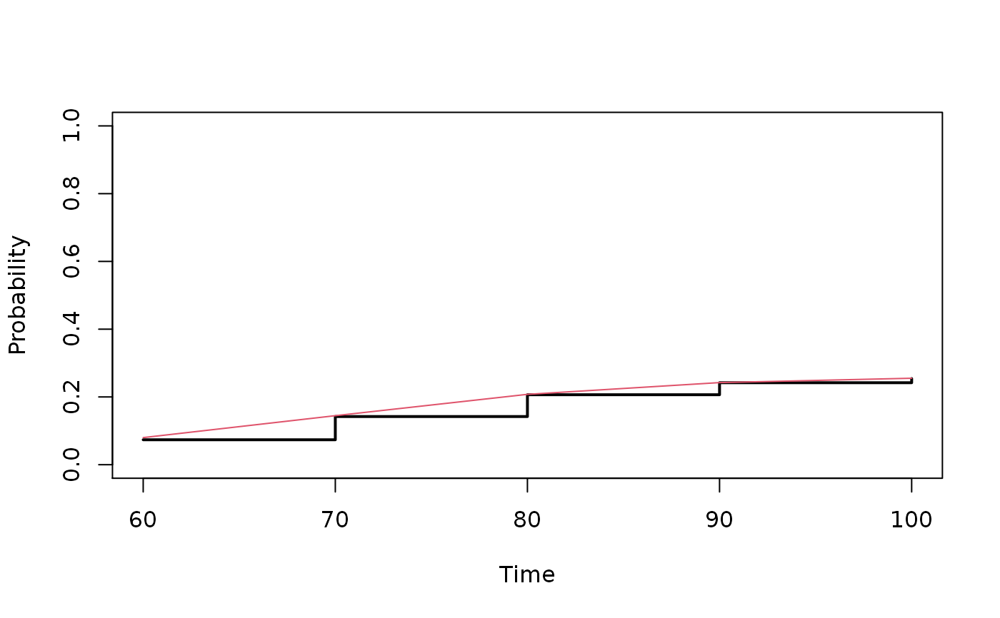

Internal function. Calculates Inverse Probability of Censoring and Truncation Weights and adds them to a data.frame
ipw2(
data,
times = NULL,
entrytime = NULL,
time = "time",
cause = "cause",
same.cens = FALSE,
cluster = NULL,
pairs = FALSE,
strata = NULL,
obs.only = TRUE,
cens.formula = NULL,
cens.code = 0,
pair.cweight = "pcw",
pair.tweight = "ptw",
pair.weight = "weights",
cname = "cweights",
tname = "tweights",
weight.name = "indi.weights",
prec.factor = 100,
...
)data frame
possible time argument for speciying a maximum value of time tau=max(times), to specify when things are considered censored or not.
nam of entry-time for truncation.
name of time variable on data frame.
name of cause indicator on data frame.
For clustered data, should same censoring be assumed and same truncation (bivariate probability calculated as mininum of the marginal probabilities)
name of clustering variable
For paired data (e.g. twins) only the complete pairs are returned (With pairs=TRUE)
name of strata variable to get weights stratified.
Return data with uncensored observations only
model for Cox models for truncation and right censoring times.
censoring.code
Name of weight variable in the new data.frame for right censorig of pairs
Name of weight variable in the new data.frame for left truncation of pairs
Name of weight variable in the new data.frame for right censoring and left truncation of pairs
Name of weight variable in the new data.frame for right censoring of individuals
Name of weight variable in the new data.frame for left truncation of individuals
Name of weight variable in the new data.frame for right censoring and left truncation of individuals
To let tied censoring and truncation times come after the death times.
Additional arguments to censoring model
library("timereg")
set.seed(1)
d <- simnordic.random(5000,delayed=TRUE,ptrunc=0.7,
cordz=0.5,cormz=2,lam0=0.3,country=FALSE)
d$strata <- as.numeric(d$country)+(d$zyg=="MZ")*4
times <- seq(60,100,by=10)
c1 <- timereg::comp.risk(Event(time,cause)~1+cluster(id),data=d,cause=1,
model="fg",times=times,max.clust=NULL,n.sim=0)
mm=model.matrix(~-1+zyg,data=d)
out1<-random.cif(c1,data=d,cause1=1,cause2=1,same.cens=TRUE,theta.des=mm)
summary(out1)
#> Random effect variance for variation due to clusters
#>
#> Cause 1 and cause 1
#>
#>
#> Coef. SE z P-val Cross odds ratio SE
#> zygMZ 1.8051405 0.2489286 7.251639 4.116707e-13 2.805141 0.2489286
#> zygDZ 0.2970522 0.1152042 2.578483 9.923512e-03 1.297052 0.1152042
pc1 <- predict(c1,X=1,se=0)
plot(pc1)
dl <- d[!d$truncated,]
dl <- ipw2(dl,cluster="id",same.cens=TRUE,time="time",entrytime="entry",cause="cause",
strata="strata",prec.factor=100)
cl <- timereg::comp.risk(Event(time,cause)~+1+
cluster(id),
data=dl,cause=1,model="fg",
weights=dl$indi.weights,cens.weights=rep(1,nrow(dl)),
times=times,max.clust=NULL,n.sim=0)
pcl <- predict(cl,X=1,se=0)
lines(pcl$time,pcl$P1,col=2)

mm=model.matrix(~-1+factor(zyg),data=dl)
out2<-random.cif(cl,data=dl,cause1=1,cause2=1,theta.des=mm,
weights=dl$weights,censoring.weights=rep(1,nrow(dl)))
summary(out2)
#> Random effect variance for variation due to clusters
#>
#> Cause 1 and cause 1
#>
#>
#> Coef. SE z P-val Cross odds ratio
#> factor(zyg)MZ 1.8252210 0.3957995 4.611479 3.998140e-06 2.825221
#> factor(zyg)DZ 0.3869257 0.1879996 2.058119 3.957867e-02 1.386926
#> SE
#> factor(zyg)MZ 0.3957995
#> factor(zyg)DZ 0.1879996